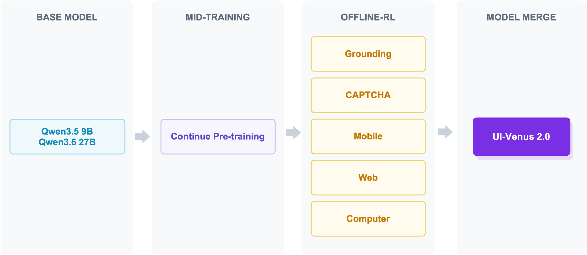
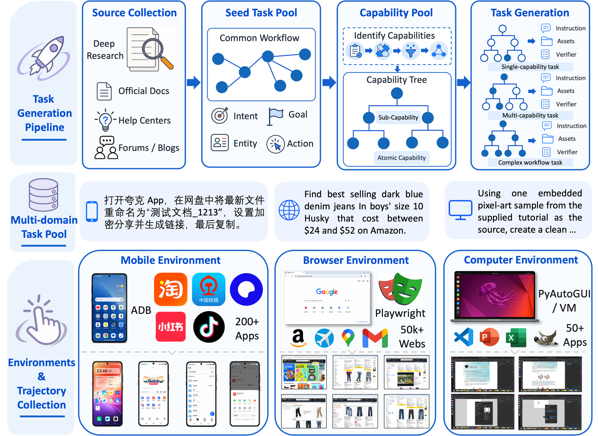

From navigation agent to reliable computer use
Building on UI-Venus and UI-Venus-1.5, UI-Venus-2.0 takes a further step toward general-purpose computer use by systematically scaling the environments, tasks, and feedback available to the agent. The agent observes the current interface, reasons about the task state, executes an action, and incorporates environmental feedback into its next decision — a unified closed loop that runs across mobile applications, dynamic websites, and full desktop operating systems.
Built for real work across GUI interfaces
Six capabilities, one agent. Animated schematics sketch what each capability does — concrete end-to-end cases will follow in a dedicated demos section.
Rename & share a cloud file
“打开夸克 App，在网盘中将最新文件重命名为“测试文档_1213”，设置加密分享并生成链接，最后复制。”
Constrained product hunt
“Find best-selling dark blue denim jeans in boys' size 10 Husky that cost between $24 and $52 on Amazon.”
Pixel-art asset from a tutorial
“Using one embedded pixel-art sample from the supplied tutorial as the source, create a clean sprite in GIMP and export it.”
Find the exact pixel
“Toggle visibility of the ‘Background copy’ layer in the Layers panel.”
Slide, rotate, click — verified
“Drag the slider so the puzzle piece fits the gap, then confirm.”
Knows when to ask first
“Free up disk space — just delete whatever we don't need.”
What’s new in 2.0
Four tightly coupled advances make environment coverage, task quality, outcome verification, and self-assessment work together as one system.
Scaled multilingual mobile environments
A substantially expanded executable mobile pool covering Chinese and English app ecosystems, paired with a deep-research-driven query-generation strategy that grounds task queries in real application functionality — improving the accuracy, validity, and executability of generated instructions.
Computer use, built from the ground up
Dedicated desktop operating-system capabilities constructed from scratch through computer-use data collection and task-specific training, extending the UI-Venus family to mobile, web, and OS interaction in one unified end-to-end agent.
Keypoint-grounded verification
Task completion is judged on task-relevant visual keypoints rather than a coarse holistic look at the final screen, with multi-model voting aggregating heterogeneous judges — reducing single-judge bias and making the reward signal robust to reward hacking.
Verification-augmented reflection
Verified feedback is distilled back into training as reflection supervision, so the agent can distinguish partial progress from true completion, avoid premature termination caused by observation misinterpretation, and recover during long-horizon interaction.
One unified training pipeline, five task families
UI-Venus-2.0 is initialized from Qwen3.5-9B and Qwen3.6-27B and trained on a deliberately complementary mixture of Grounding, CAPTCHA, Mobile, Web, and Computer tasks: grounding provides fine-grained spatial perception, CAPTCHA offers controlled and verifiable interaction supervision, and the navigation families supply realistic multi-step experience.
Multimodal Mid-Training
Large-scale trajectory-based mid-training over simulated mobile, web, and OS environments, with human–discriminator collaborative verification filtering invalid or ambiguous interactions, plus programmatically synthesized grounding and CAPTCHA supervision.
Offline RL
Step-level RL trajectories for Mobile, OS, and Web optimize state-aware action selection and execution reliability, while verified CAPTCHA and grounding instances embedded in realistic interfaces teach precise localization under visual clutter.
Multi-teacher On-policy Distillation
Domain-specialized teachers are consolidated into a single unified policy that preserves the broad multimodal reasoning of the base model while composing spatial grounding, verified interaction, and long-horizon navigation.


Benchmark results
Key results per domain, with the strongest published baselines for context. Evaluation is in progress — hatched bars marked TBD are UI-Venus-2.0 slots that will be filled as numbers are finalized. Full comparison tables are available under each chart group.
Online, interactive mobile-agent benchmarks, including our in-house VenusBench-CN with tasks drawn from 100+ real-world Chinese Android applications.
Full comparison table — Mobile Use
Open-ended tasks in real computer environments: desktop and web applications, OS-level operations, and long-horizon professional workflows.
Full comparison table — Computer Use
End-to-end navigation on the live web: WebVoyager (filtered & refreshed 595-task split), Online-Mind2Web, and the long-horizon cross-site Odysseys benchmark with rubric-based scoring.
Full comparison table — Web Navigation
Element localization across high-resolution professional software, mobile / web / desktop interfaces, and reasoning-heavy or refusal-aware instructions. UI-Venus-1.5 marks our previous generation.
Full comparison table — GUI Grounding
Three complementary CAPTCHA benchmarks, including our VenusBench-CAPTCHA — 219 images across eight real-world CAPTCHA categories (OCR text entry, text / icon click, image rotation, drag-to-end, slider puzzle, visual reasoning, one-click verification).
Full comparison table — CAPTCHA Solving
Capable, and careful about it
OSBlind evaluates an agent’s susceptibility to safety blind spots: benign-looking instructions in realistic desktop environments that can lead to unintended harmful outcomes, measured by Attack Success Rate (ASR, lower is better).
Safety-aware training brings ASR down from 90%+ (typical of prior GUI agents) to 12.3% — increased operational capability accompanied by more reliable control over potentially consequential actions.
ASR = frequency of executing harmful outcomes under benign instructions. Model-size labels for our checkpoints to be confirmed in the final report.
BibTeX
If you find UI-Venus-2.0 useful, please cite the technical report. TODO · arXiv ID
@article{uivenus2026,
title = {UI-Venus-2.0 Technical Report},
author = {{Venus Team, Ant Group}},
journal = {arXiv preprint arXiv:XXXX.XXXXX},
year = {2026}
}